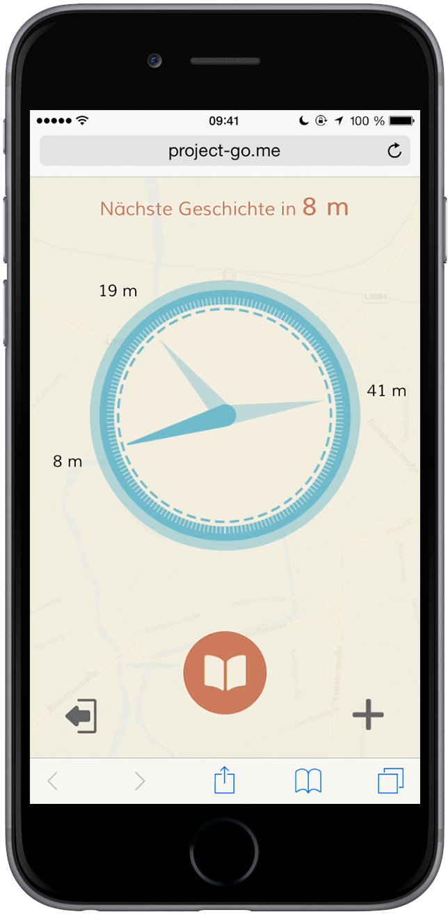

Project GO! is a digital, personal and dynamic city chronicle, in which every plain citizen can participate. He can look back into the past suburb to understand the present and eternalise his own present, what is important to him in his time, to posterity.
The special feature: You can only read events suburb and you can see the next three stories at your location using a digital compass. Especially for municipalities and cities this is suitable as a dynamic, personal and digital city guide, which makes places more interesting and more tangible for example for tourists.
We developed this as a web app (adapted for iPhone 6). It works on every smartphone, which got GPS and a digital compass. You can open the website via your normal web browser.
During development, I have done most of the design and management (sales, finance). I just helped a little bit in programming because we were under time pressure, but I am well informed about all processes and functions.
Please note: Open the web app with an smartphone. If you sign up, please do not use a password you are actually using, because this is a prototype!
Open Web app
